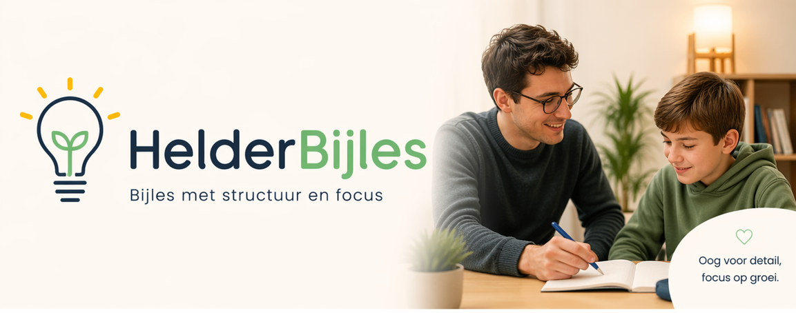

▱
Lagere school
Rekenen, taal, leren leren en opnieuw vertrouwen krijgen in schoolwerk.
Ontdek de mogelijkheden →
Over HelderBijles
HelderBijles is een vzw die jongeren extra kansen geeft wanneer leren tijdelijk moeilijk is. We bieden rustige, kwaliteitsvolle begeleiding van lagere school tot hoger onderwijs.
Maak kennis met HelderBijles →Bijles door betrokken mensen, zo veel mogelijk ook door lesgevers met autisme.
Cursusaanbod
Van een stevige basis tot nieuwe studieroutines. Kies een niveau en we zoeken samen de beste aanpak.
Rekenen, taal, leren leren en opnieuw vertrouwen krijgen in schoolwerk.
Ontdek de mogelijkheden →Gerichte hulp bij vakken, planning, toetsen en een haalbare studiemethode.
Ontdek de mogelijkheden →Inhoudelijke ondersteuning, structuur en focus bij grotere leerstofpakketten.
Ontdek de mogelijkheden →Je zoekt bijles
Welk vak, welke leeftijd en waar loopt het vast? Een korte aanvraag is genoeg om te starten.
We bekijken welke begeleiding, lesvorm en lesgever het beste past.
Na de kennismaking volgen we samen op of de begeleiding werkt.
Je wil meewerken
Wil je lesgeven, coachen, als vrijwilliger ondersteunen of HelderBijles als sponsor helpen groeien? We horen graag van je.
Ik wil kennismaken →Testimonials
Ervaringen van leerlingen en ouders, gedeeld met hun toestemming.
Nieuws en tips
Neem contact op
Vertel ons kort waar je naar op zoek bent. We nemen persoonlijk contact met je op.
vzw HelderBijles
Bosstraat 1113
Merelbeke-Melle